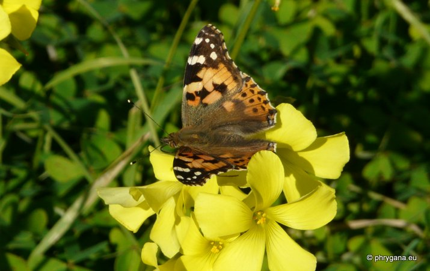
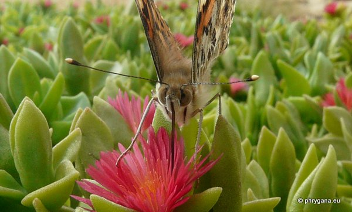
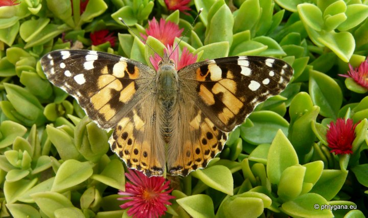
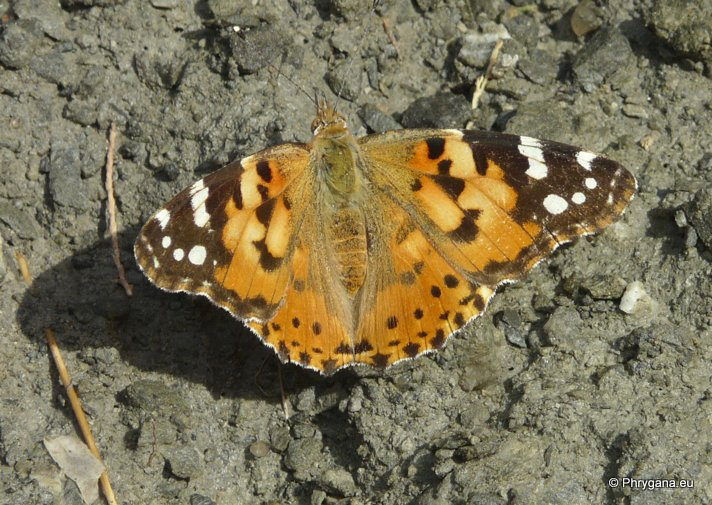

| PHRYGANA | Fauna | Flora | Galles | liste des espèces |
contact -
info - commentaires phrygana1 (at) gmail.com |
| Particularités crétoises | nouveautés | Mines | ressources naturelles |
| Vanessa cardui (Linnaeus 1758) |
| 345 | Fauna | LEPIDOPTERA | NYMPHALIDAE | Nymphalinae | Vanessa Fabricius 1807 |
|
 Vanessa cardui butinant Oxalis pes-caprae Lagolio 20 janvier 2012 |
| la Belle-dame -- Painted Lady -- Distelvlinder -- Distelfalter |
| Adulte: mâle envergure de 56 à 70 mm -- femelle un peu plus grande avec une envergure de 60 à 74 mm. Couleur du dessus brun foncé avec des taches fauves et un ocelle noir pupillé de blanc; sur l'aile postérieure, les taches fauves submarginales ont des ocelles pupillés de blanc; le mâle a une bande androconiale brune, duveteuse |
| Espèce multivoltine en Crète: périodes de vol de janvier à décembre |
| Oeufs pondus un à un souvent sur la face supérieure de la feuille; de couleur verdâtre devenant gris à l'éclosion une semaine plus tard; les larves se créent un abri en enroulant des feuilles, abri qu'elles quittent pour se nourrir; développement complet en quelques semaines; chrysalide suspendue à une feuille ou une tige, souvent dans un cocon lâche de fils de soie; émergence 2 à 3 semaines plus tard |
| Larve polyphage: Asteraceae (Cirsium sp., Carlina sp.) Malvaceae, Boraginaceae, Fabaceae |
| Statut en Crète: indigène |
| Statut en Belgque: espèce immigrante pouvant se reproduire en été |
| Biotopes en Crète: phrygana, terrains boisés clairs, vallées ombragées, parcs, jardins. |
| Altitudes: 0 - 1800 m. |
| Distribution: Europe, Asie Mineure et centrale, Australie, Amérique du Nord |
| Note: l'espèce est migratrice de la zone méditerranéenne vers le nord de l'Europe |
|
 Vanessa cardui butinant Aptenia cordifolia Agios Giorgos (Melambes) 12 octobre 2011 |
|
 Vanessa cardui butinant Aptenia cordifolia Agios Giorgos (Melambes) 12 octobre 2011 |
|
 Vanessa cardui Agios Giorgos (Melambes) 06 décembre 2012 |
| 14 janvier 2013 |
| © paul fontaine -- © Phrygana.eu 2007 -- 2013 |